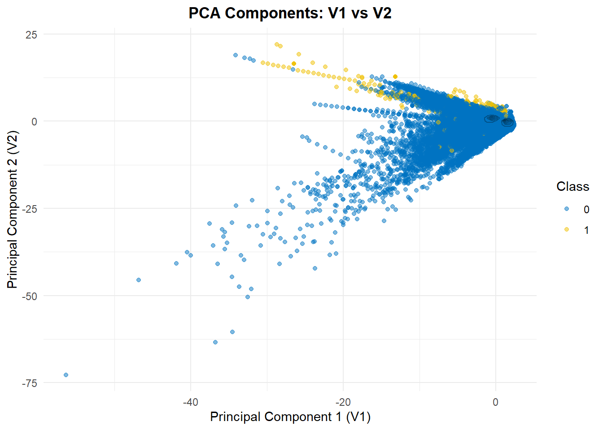
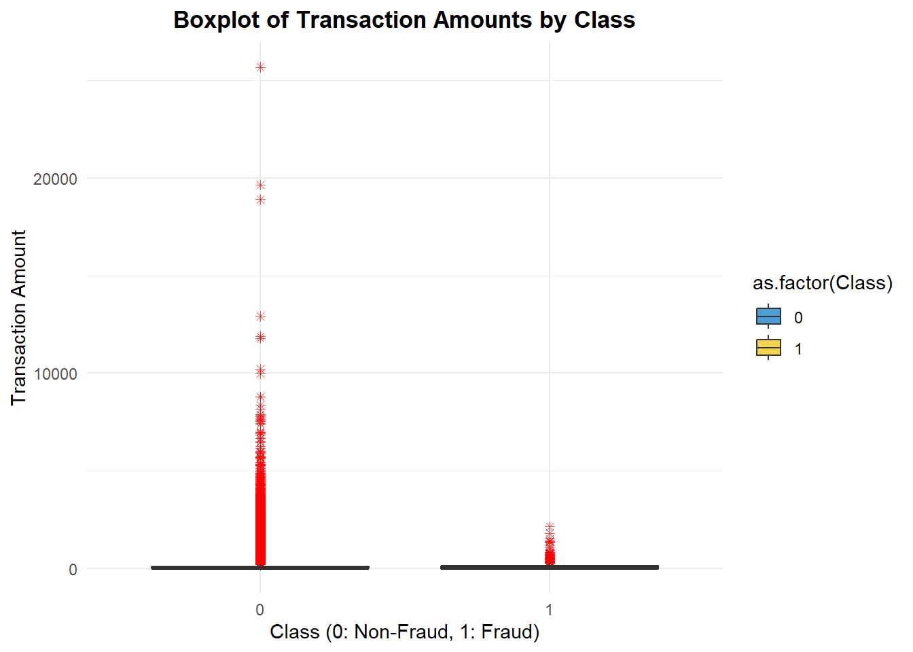
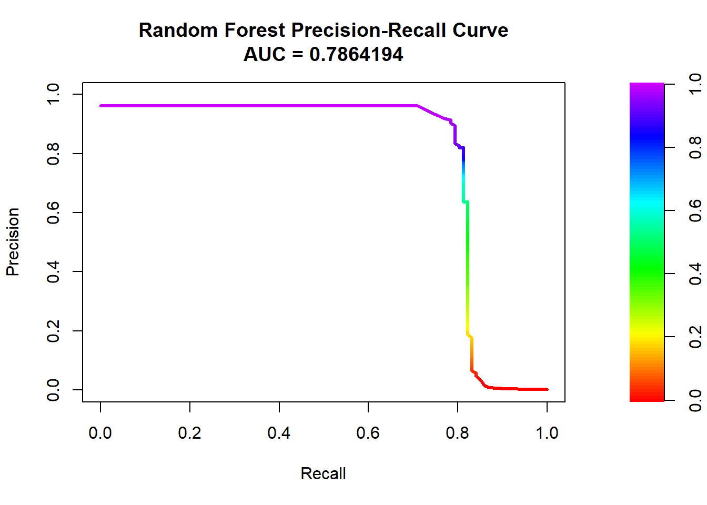

Credit card fraud detection
Introduction
Credit card fraud is a growing concern in the financial industry, causing significant losses for banks and customers alike. With the rise of online transactions and digital payments, fraudsters have become increasingly sophisticated in exploiting security vulnerabilities. Detecting fraudulent transactions is a challenging task due to the highly imbalanced nature of fraud datasets, where fraudulent transactions represent only a small fraction of total transactions.
The dataset used in this analysis is derived from real-world credit card transactions and contains anonymized features extracted using Principal Component Analysis (PCA). The goal is to build predictive models that can accurately distinguish between fraudulent and legitimate transactions, helping financial institutions prevent financial losses and enhance security measures.
Reading the data
About the data
Columns in the Credit Card Fraud Detection Dataset
| Column Name | Description |
|---|---|
| Time | Seconds elapsed between this transaction and the first transaction in the dataset. |
| V1 to V28 | Anonymized features resulting from a PCA transformation. |
| Amount | The transaction amount. |
| Class | Target variable (0 for legitimate transactions, 1 for fraudulent transactions). |
Note
The data has the dimensions of 284807, 31.
Dataset and Its Significance
The dataset used in this analysis consists of anonymized credit card transactions, where each row represents a single transaction. Due to privacy concerns, the dataset does not include personally identifiable information but instead provides 28 principal components (V1 to V28) obtained using PCA. The dataset also includes the transaction amount and a binary label (Class), where: - 0 represents a legitimate (non-fraudulent) transaction. - 1 represents a fraudulent transaction.
Detecting fraudulent transactions is particularly challenging because fraud cases are rare. The class imbalance means that naive models may predict most transactions as non-fraudulent and still achieve high accuracy, making it essential to use alternative evaluation metrics such as precision, recall, and the F1-score.
By exploring this dataset, we aim to uncover key patterns that distinguish fraudulent transactions from legitimate ones, aiding in the development of more robust fraud detection systems. Fraudulent transactions often exhibit distinct characteristics, such as unusual spending behavior, high transaction amounts, or rapid consecutive transactions from different locations. Understanding these patterns allows financial institutions to implement real-time fraud detection systems that minimize false positives while effectively identifying fraudulent activities.
Additionally, credit card fraud detection relies heavily on machine learning algorithms due to the vast amount of transaction data generated every second. By leveraging supervised learning models and data preprocessing techniques such as PCA transformation and oversampling methods, we can enhance the detection of fraudulent activities. The findings from this study can help improve financial security measures and refine existing fraud detection systems by identifying high-risk transactions efficiently.
Exploring the data
Check Class Imbalance
| Var1 | Freq |
|---|---|
| 0 | 284315 |
| 1 | 492 |
Visualizing Class Distribution

Note
Observation for Class Distribution Graph
The bar graph visually represents the distribution of fraudulent and non-fraudulent transactions in the dataset.
- Severe Class Imbalance:
The graph shows that the vast majority of transactions belong to the non-fraudulent class (0), while fraudulent transactions (1) make up a tiny fraction of the dataset.
This extreme imbalance is a common challenge in fraud detection, as models may become biased toward predicting the majority class, leading to poor recall for fraud cases.
- Impact on Model Performance:
Since fraud transactions are rare, a naïve model that predicts all transactions as non-fraudulent would still achieve high accuracy.
However, accuracy alone is misleading in this scenario, as the model would fail to correctly identify fraud cases, which is the primary objective of fraud detection.
- Need for Resampling Techniques:
Due to this imbalance, techniques such as oversampling, undersampling, or synthetic data generation (e.g., SMOTE or ROSE) are necessary to balance the dataset and improve model learning.
PCA Scatter Plot

Note
Fraudulent transactions (Class 1) are concentrated in distinct regions of the PCA-transformed space.
Non-fraudulent transactions (Class 0) are more dispersed, indicating greater variation in their feature distribution.
The clustering of fraudulent transactions suggests that certain PCA components can be useful in fraud detection.
Density Plot for Amount
Note
Based on the density plots, some of the interesting observations are:
Fraudulent Transactions Show Distinct Density Distributions
Fraudulent transactions (Class 1) exhibit different density peaks compared to legitimate transactions (Class 0). The density for fraud cases is generally lower, but it is concentrated in specific transaction amount ranges.
Fraud Occurrence Increases with Higher Transaction Amounts
As we move to the “High” and “Very High” transaction amount categories, fraudulent transactions appear more frequently.This suggests that fraudsters often target higher-value transactions, possibly to maximize their financial gain.
Legitimate Transactions Are More Evenly Distributed
The density of legitimate transactions remains relatively high across all amount categories, indicating that customers make a wide range of purchases. Unlike fraudulent transactions, they do not exhibit sharp density spikes in specific ranges.
Overlapping Distributions in Lower Amount Categories
In the “Low” and “Medium” amount bins, there is significant overlap between fraudulent and legitimate transactions, making fraud detection more challenging in this range. This suggests that lower-value fraudulent transactions may be harder to differentiate from normal purchases.
Potential for Threshold-Based Fraud Detection
Given the differences in density, setting different risk thresholds based on transaction amount could improve fraud detection accuracy. Higher-value transactions might need stricter anomaly detection rules compared to low-value ones.
Boxplot to detect anomalies

Note
Fraudulent transactions exhibit a lower median transaction amount compared to non-fraudulent transactions.The presence of several outliers in fraudulent transactions suggests some high-value fraudulent activities. The spread of transaction amounts for legitimate transactions is much broader.
Data Preprocessing
We first normalise the amount then remove
Timecolumn.In this analysis, the ROSE (Random Over-Sampling Examples) method was applied to generate a more balanced training set. Practical Implications for Fraud Detection:
In real-world applications, fraud detection models must prioritize high recall and precision, ensuring fraudulent transactions are flagged without overwhelming users with false positives.
Banks and financial institutions must use sophisticated models such as XGBoost or Random Forest, which can handle imbalanced data more effectively than traditional logistic regression.
we apply all 3 to discuss which works best for this dataset.
| Var1 | Freq |
|---|---|
| 0 | 114086 |
| 1 | 113760 |
Model Training
int [1:227846] 0 0 0 0 0 0 0 0 0 0 ...Logistic Regression
Confusion Matrix and Statistics
Reference
Prediction 0 1
0 56174 17
1 680 90
Accuracy : 0.9878
95% CI : (0.9868, 0.9887)
No Information Rate : 0.9981
P-Value [Acc > NIR] : 1
Kappa : 0.2026
Mcnemar's Test P-Value : <2e-16
Sensitivity : 0.9880
Specificity : 0.8411
Pos Pred Value : 0.9997
Neg Pred Value : 0.1169
Prevalence : 0.9981
Detection Rate : 0.9862
Detection Prevalence : 0.9865
Balanced Accuracy : 0.9146
'Positive' Class : 0
Logistic Regression Precision-Recall Curve

Random Forest
Confusion Matrix and Statistics
Reference
Prediction 0 1
0 56804 19
1 50 88
Accuracy : 0.9988
95% CI : (0.9985, 0.9991)
No Information Rate : 0.9981
P-Value [Acc > NIR] : 5.63e-05
Kappa : 0.7178
Mcnemar's Test P-Value : 0.0003043
Sensitivity : 0.9991
Specificity : 0.8224
Pos Pred Value : 0.9997
Neg Pred Value : 0.6377
Prevalence : 0.9981
Detection Rate : 0.9972
Detection Prevalence : 0.9976
Balanced Accuracy : 0.9108
'Positive' Class : 0

XGBoost
0 1
114086 113760 Model Training and Evaluation
Confusion Matrix and Statistics
Reference
Prediction 0 1
0 56822 20
1 32 87
Accuracy : 0.9991
95% CI : (0.9988, 0.9993)
No Information Rate : 0.9981
P-Value [Acc > NIR] : 2.643e-09
Kappa : 0.7695
Mcnemar's Test P-Value : 0.1272
Sensitivity : 0.9994
Specificity : 0.8131
Pos Pred Value : 0.9996
Neg Pred Value : 0.7311
Prevalence : 0.9981
Detection Rate : 0.9976
Detection Prevalence : 0.9979
Balanced Accuracy : 0.9063
'Positive' Class : 0
Area Under the Precision-Recall Curve
Discussion of Results
- Logistic Regression performs moderately well but struggles with imbalanced data.
- Random Forest improves performance by capturing complex interactions.
- XGBoost delivers the highest precision-recall score, making it the most effective for fraud detection.